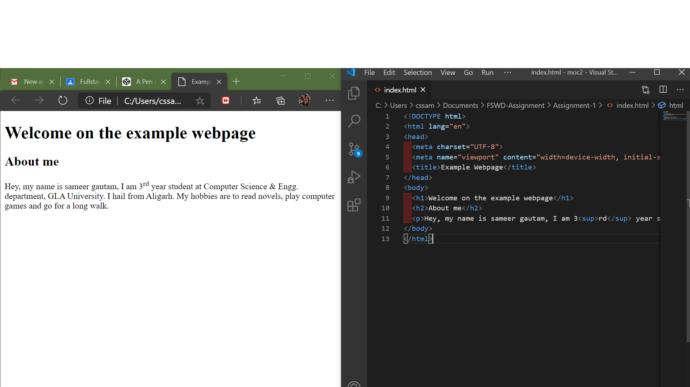
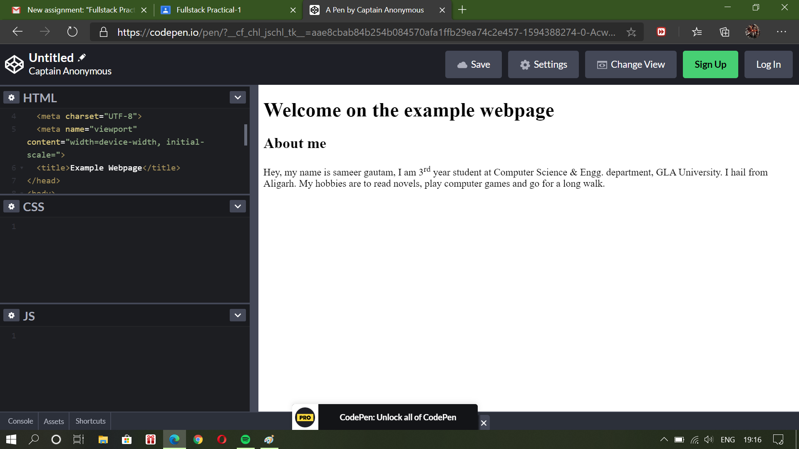

Practical-1: Create a web page including HTML basic skeleton using offline HTML Editor and Online Sandbox Environment
Welcome to Fullstack Course
About Course
Front-end web developemnt is everything involved in programming the user interaface of a web application.
Typically it refers to the Hypertext Markup Language (HTML), Cascading Style Sheets (CSS) and JavaScript portion of web site production as opposed to the database or server-side programming. It encompassess everything
from building a simple page of HTML text to creating complex, responsive HTML5 websites designed to be accesseed via various different browsers, devices and screen sizes.
Output
Offline HTML Editor

Online Sandbox

Go back